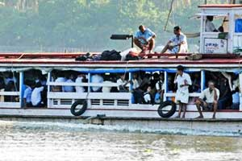
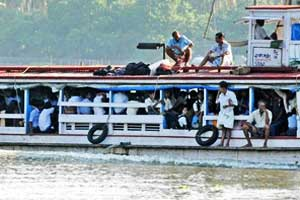
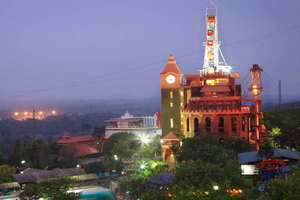
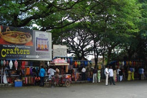

MAIN ATTRACTIONS
Bolgatty Island
The Bolgatty Island, is a historic town, in the commercial capital of Fort Kochi in Ernakulam. The main attraction here is the palace of the same name. This island is easily accessible from the mainland. India’s one and only international marina, the Kochi International Marina, is another important part of this island. Other than these there is the Bolgatty Event Centre, the venue which is perfect for conducting various events like conferences, conventions, exhibitions, wedding receptions etc.
 



Cherai beach
Bordering the Vypeen island off Cochin is the lovely beach of Cherai. It is located about 25 kilometers away from Kochi and about 30 kilometers from Kochi International Airport at Nedumbassery. This beach is a popular tourist destination especially among the foreigners. The beach is less busy and cleaner as compared to many other beaches in Ernakulam district. Cherai beach is lined with Chinese fishing nets, coconut groves and paddy fields offering the perfect setting.
Wonderla
Earlier known as Veegaland, this popular amusement park at Kochi, Kerala is one of the must visit place if you love taking adventurous rides. The Wonderla Amusement park, is owned and operated by the Wonderla Holidays. This park is the first of the three amusement parks of the group, the others which are in Bengaluru and Hyderabad. The one at Kochi was started in the year 2000 and was re-branded in April 2011. This amusement park is located on top of the Pallikkara hill, which is at a distance of 14 kilometers from Kochi. This park has more than 50 water and dry land rides which is spread over an area of 30 acres.


Chinese fishing nets
A landmark tourist attraction of Kochi, Kerala, the Chinese Fishing nets, can be seen on the shores of the backwaters. Not only a fishing accessory, these nets have, now become an integral part of Kochi tourism. These Chinese Fishing is believed to have been brought by Zheng, who is a Chinese explorer, from Kubla Khan’s court. It is said to have been set up between 1350 and 1450 AD. These nets are built using the wood of Teak and also with Bamboo poles, where balance is the key point. Each of these nets go up to a height of 10 meters and has a cantilever of about 20 meters attached to it.
Mattanchery
A place noted for being the former trade centre, Mattancherry is a well known tourist destination near Kochi, Kerala. It is located at about 9 kilometers from Ernakulam town. Mattancherry is surrounded by backwaters of the Arabian Sea. Previously it was known for being the spice hub in Kochi due to the trade of tea and spices like pepper and turmeric. Mattancherry is known for being a place of multi culture with various communities like Jews, Konkanis, Gujaratis, Jains and Marathis living there. Here churches, agraharams, mosques and synagogues coexist with each other.
